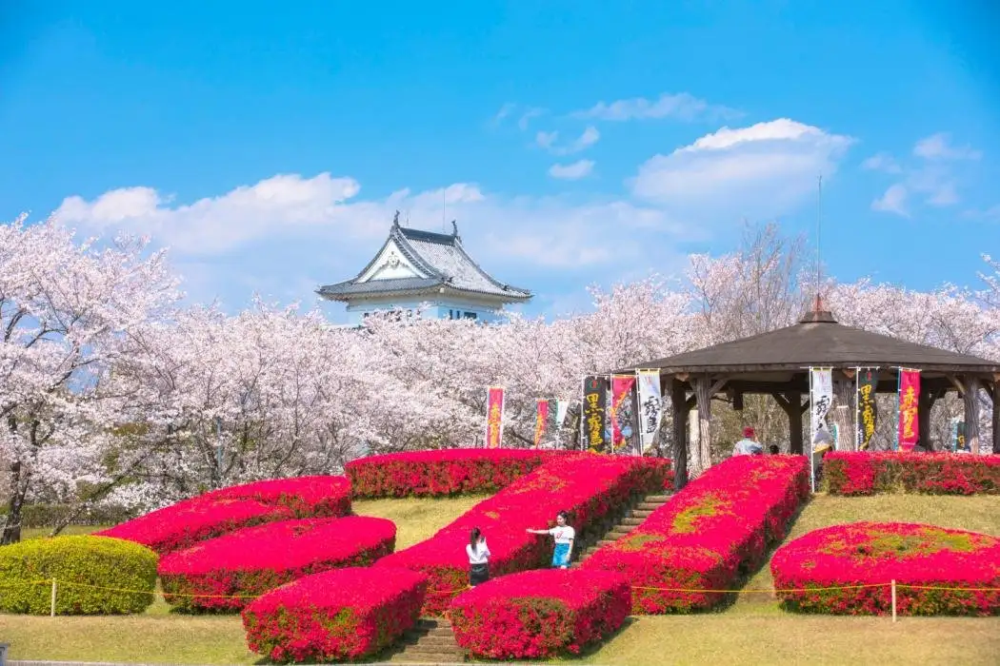
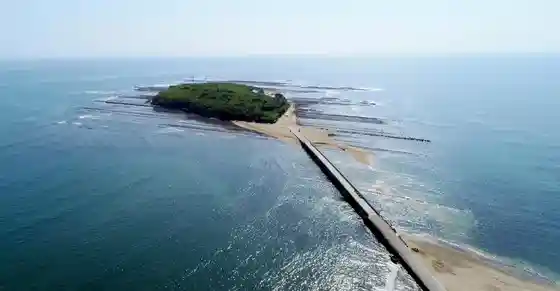
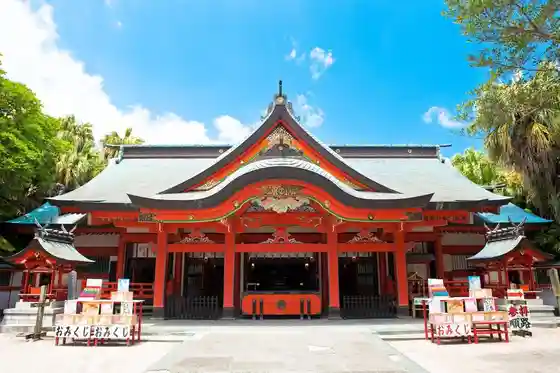
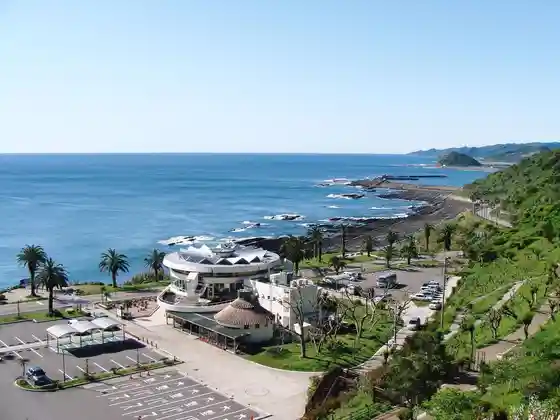
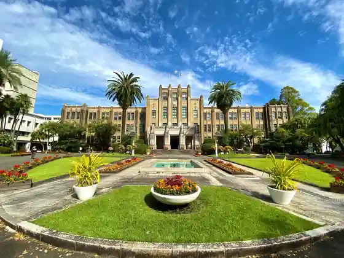

Miyazaki
Miyazaki · Miyazaki
Miyazaki
Highlighted on the Miyazaki map.

Sights
Aoshima

Aoshima Shrine

(Roadside Station) Fenikkusu

Miyazaki Kencho

Miyazaki Fenikkusu Shizen Zoo
Nichinan Coast
Miyazaki Shrine
Horikiri Toge
Oni no Sentakuita
Hinata TENNIS PARK MIYAZAKI
Furorante Miyazaki
ASOBI PARK
Pasoruakua Park Miyazaki
Miyazaki Airport
Miyazaki Rinkai Park
Amyu Plaza Miyazaki
Miyazaki Minato
Miyazaki Ken Sogo Museum
(Ko Zai) Miyazaki Bunka Shinko Kyokai Miyazaki Kagakugijutsukan
Hinata Miyazaki Ken Sogo Sports Park
Miyazaki Sogo Gym
Hinata Budokan (Hinata Miyazaki Ken Sogo Sports Park)
Miyako Botanikku Garden Aoshima (Prefectural Aoshima Anettai Botanical Garden)
AOSHIMA BEACH PARK
Fenikkusu Shiigaia Resort
Hinata Sanmarinsutajiamu Miyazaki (Hinata Miyazaki Ken Sogo Sports Park)
Aoshima Beach
Aibiisutajiamu (Miyazaki Ikime no Mori Sports Park)
Eikokushiki Garden (Kokusai Kaihin Entoransu Plaza)
Eda Shrine
Prefectural Heiwadai Park
Dai 2 Yakyujo (Miyazaki Ikime no Mori Sports Park)
Hinata Miyazaki Ken Sogo Sports Park Kurosukantoriikosu (Fenikkusukosu)
JRA Miyazaki Ikusei Ranch
Shiawase no Kiiroi Posuto / Hyuga Natsu Posuto
Ichiyo Inari Shrine
Roadside Station Takaoka
Tenjin Yama Park
Awa Shi Hara Forest Park Shimin Forest
Miyazaki Ato Center
Sumiyoshi Shrine
Hinata Ki no Hana Domu (Hinata Miyazaki Ken Sogo Sports Park)
Miyazaki Ken Gym
Ragubii Ba (Hinata Miyazaki Ken Sogo Sports Park)
Oyodo Kawa Gakushu Kan
Shiawase no Kiiroi Posuto
Aoshima Safupointo
Kae Ta Gorge (Miyazaki Nature Kyuyo Hayashi)
Nishitachi
SOKKEN Sutajiamu (Miyazaki Kiyotake Sogo Sports Park)
Kizaki Hama
Tengashiro Park
Ai Homu Vitality Field Ikime no Mori
KIDS OASIS (Shiigaia Nai Shukuhakusha Gentei)
Miyazaki Tourist Information
Miyazaki Shirahama Campground
Nanshikiyakyu Ba A (Hinata Miyazaki Ken Sogo Sports Park)
Hojo Kyugijo (Hinata Miyazaki Ken Sogo Sports Park)
Ki Hana Shrine
Aoshima Akuteibitei Center
Hinata Rikujokyogijo (Hinata Miyazaki Ken Sogo Sports Park)
Hinata Miyazaki Ken Sogo Sports Park Dai 3 Kyogijo (Sakka Ba)
Miyazaki Sadowara Gym
Hyuga Kei Osamu Sono Bara Sono (Hinata Miyazaki Ken Sogo Sports Park Nai)
Miyazaki Kiyotake Gym
Nanshikiyakyu Ba B (Hinata Miyazaki Ken Sogo Sports Park)
Miyazaki Safugaido (Miyazaki Surf Guide)
Miyazaki Ikime no Mori Yu Furutachi
Hyuga Natsu Domu (Miyazaki Kiyotake Sogo Sports Park)
Miyazaki Kyu Mine General Park (Yakyujo)
Ibentosukuea
HAROW
Fenikkusukantorii Club
Roadside Station Tano
Shirahama Beach
Nojima Shrine
Miyazaki Tengashiro Folk History Museum
Aoshima Gorufu Kurabu
Kogu Shrine
Sakka Ragubii Ba (Miyazaki Ken Yagaigata Toreningu Center)
Tamokuteki Guraundo (Miyazaki Ken Yagaigata Toreningu Center)
Miyazaki Kyu Mine General Park
Tarumi Park
Miyazaki Ken Aoshima Seishonen Nature no Ie Gym
Shitsunai Renshujo (Miyazaki Ken Yagaigata Toreningu Center)
Takaoka no Gatsu Chi Ume
Hanpi Domu (Miyazaki Ikime no Mori Sports Park)
Hoto Yama Park
Miyazaki Ikime no Mori Sports Park (Gym)
Hinata Berodoromu Miyazaki
Miyazaki Sanshainkantorii Club
Hinatahimuka Sutajiamu (Hinata Miyazaki Ken Sogo Sports Park)
Miyazaki Reikusaidogorufu Kurabu
Tamokuteki Plaza (Miyazaki Kiyotake Sogo Sports Park)
Tomu Watosongorufukosu
Rikujokyogijo (Miyazaki Ikime no Mori Sports Park)
Miyazaki Kantorii Club
Miyazaki Kokusai Kaihin Entoransu Plaza
Kagekiyo Byo
Oyodo Kawa Gorufu Ba
Miyazaki Kokusaikuko Kantorii Club
Tsubakiyama Forest Park
UMK Kantorii Club
Miyazaki Tano Sports Park (Yakyujo)
Miyazaki Kokusai Kaihin Entoransu Plaza (Sakka Ba)
Dai 2 Yakyujo (Miyazaki Kiyotake Sogo Sports Park)
Miyazaki Oyodo Kantorii Club
Shiigaiatenisuakademii
Miyazaki Kyu Mine General Park (Tenisukoto)
Haibisukasugorufu Club
Miyazaki Ikime no Mori Sports Park (Tenisukoto)
Tamokuteki Guraundo B Jinkoshiba Koto (Miyazaki Ikime no Mori Sports Park)
Aiwa Miyazaki Resort GolfClub&Hotel
Okunai Renshujo (Hinata Miyazaki Ken Sogo Sports Park)
Miyazaki Kokusai Gorufu Kurabu
Miyazaki Kantorii Club
Miyazaki Kiyotake Sogo Sports Park (SOKKEN Sutajiamu)
Miyazaki Paburikkugorufu
Dai 2 Rikujokyogijo (Hinata Miyazaki Ken Sogo Sports Park)
Tamokuteki Guraundo B Tennenshiba Koto (Miyazaki Ikime no Mori Sports Park)
Ichiriyama Chiku Shibazakura Festival
Miyazaki Kiyotake Sogo Sports Park (Tenisukoto)
Supurasshueria (Fenikkusu Shiigaia Oshan Tawa Shukuhakusha Gentei)
Miyazaki Kiyotake Sogo Sports Park (Kyudo Ba)